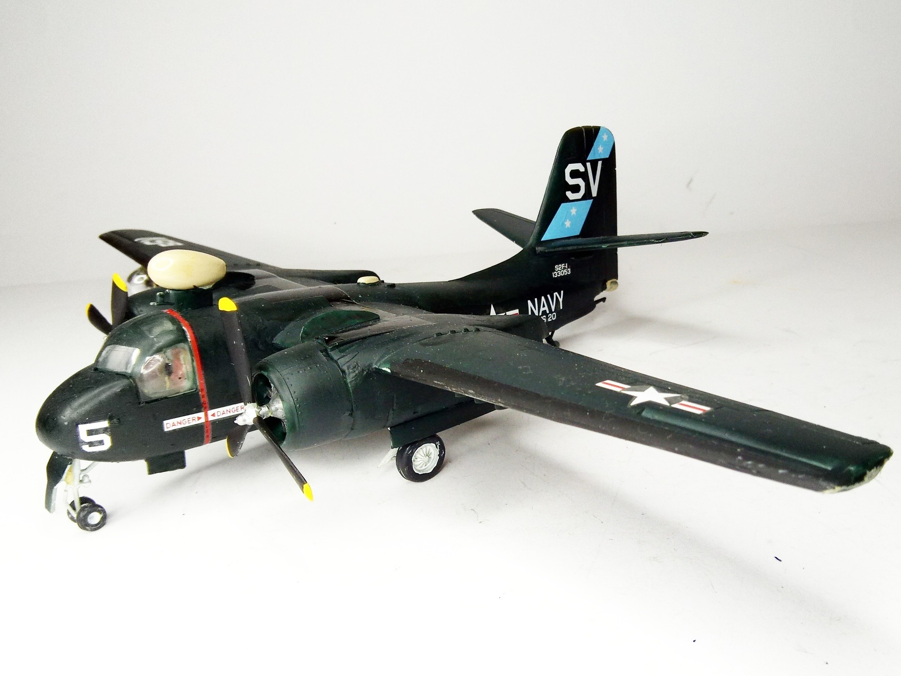
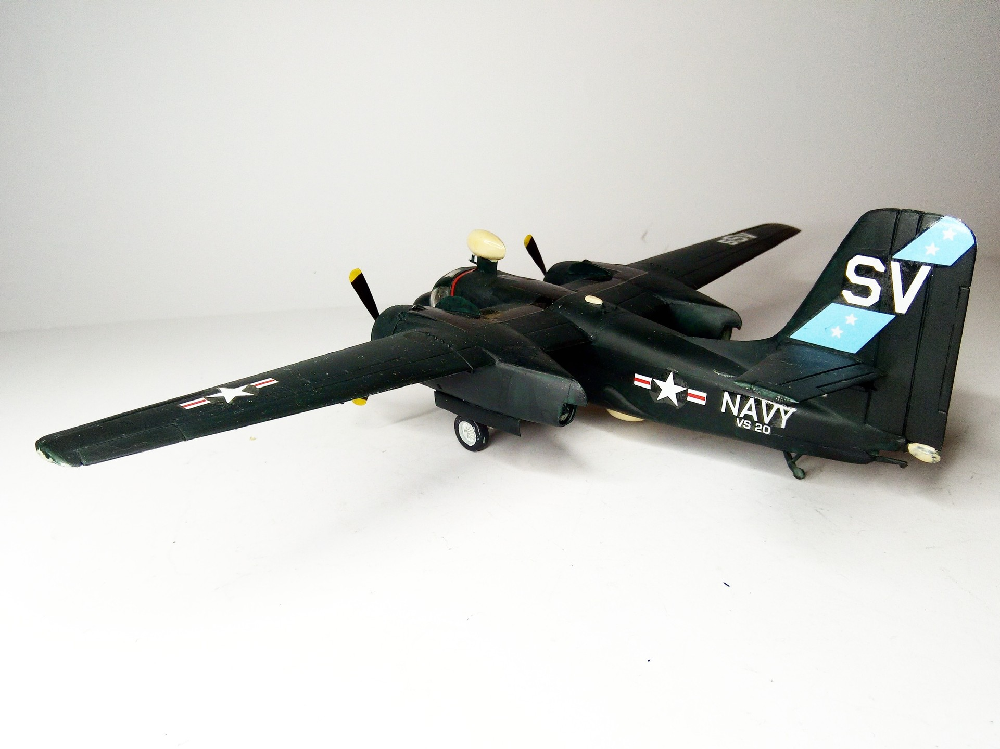

Aerei · scale model archive
Grumman S2F-1 Tracker
Grumman S2F-1 Tracker — Kit: Hobbycraft, Scale: 1/72. SV:VS20 USS Princeton 1956 #1/72 #Hobbycraft #Grumman #Tracker

Photo gallery

English description
SV:VS20 USS Princeton 1956
#1/72 #Hobbycraft #Grumman #Tracker
Descrizione italiana
SV:VS20, USS Princeton, 1956.